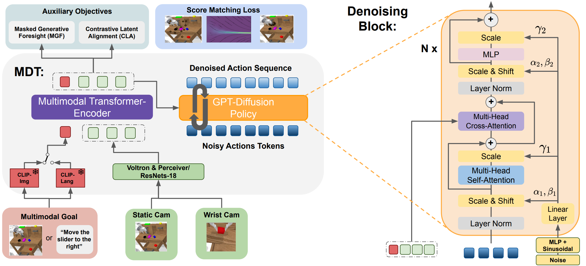

Abstract
Model Architecture
 Left: Overview of the proposed multimodal Transformer-Encoder-Decoder Diffusion Policy used in MDT. Right: Specialized Diffusion Transformer Block for the Denoising of the Action Sequence.
MDT learns a goal-conditioned latent state representation from multiple image observations and multimodal goals. The camera images are either processed with frozen Voltron Encoders and a Perceiver or using ResNets. The separate GPT denoising module iteratively denoises an action sequence of 10 steps with a Transformer Decoder with causal Attention. It consists of several Denoising Blocks, as visualized on the right side. These blocks process noisy action tokens with self-attention and fuse the conditioning information from the latent state representation via cross-attention. MDT applies adaLN conditioning to condition the blocks on the current noise level. In addition, it aligns the latent representation tokens of the same state with different goal specifications using self-supervised contrastive learning. The latent representation tokens are also used as a context input for the masked Image Decoder module to reconstruct masked-out patches from future images.
Masked Generative Foresight
The Masked Generative Foresight Auxiliary Task enhances the MDT model. It starts by encoding the current observation and goal using the MDT Encoder. The resulting latent state representations then serve as conditional inputs for the Future Image-Decoder. This decoder receives encoded patches of future camera images along with mask tokens. Its task is to reconstruct the occluded patches in future frames.
Contrastive Latent Alignment
Contrastive Latent Alignment auxiliary objective aligns the MDT(-V) embeddings across different goal modalities. These embeddings include the goal as well as the current state information, allowing the CLA objective to consider the task dynamics. Every training sample that is paired with a multimodal goals specification is projected to latent vectors for images and language goals respectively. Contrastive Latent Alignment is achieved by using the InfoNCE loss with cosine similarity between the image and language projection.
State-of-the-art on CALVIN ABCD→D
MDT-V sets a new record in the CALVIN challenge, extending the average rollout length to 4.51 which is a 10% absolute improvement over RoboFlamingo. MDT also surpasses all other tested methods. Notably, MDT achieves this while having less than 10% of trainable parameters and not requiring pretraining on large-scale datasets.
LIBERO with less than 2% Language Annotations
In the LIBERO task suites, MDT proves to be effective with sparsely labeled data, outperforming the Oracle-BC baseline, which relies on fully labeled demonstrations. MDT not only outperforms the fully language-labeled Transformer Baseline in three out of four challenges but also significantly surpasses the U-Net- based Distill-D policy in all tests by a wide margin, even without auxiliary objectives. The performance of MDT on the LIBERO-90 suite demonstrates that both objectives and our policy learn best from a large dataset. The proposed auxiliary objectives further improve the average performance of MDT by 8.5% averaged over all 5 task suites.
Real Robot Experiments
Real world play dataset encompasses around 4.5 hours of interactive play data with 20 different tasks for the policies to learn. Play demonstrations last from around 30 seconds to more than 450 seconds and contain between 5 and 20 tasks. The dataset is partially labeled by randomly identifying some tasks in the demonstrations and annotating the respective interval, yielding a total of 360 labels (~18 labels per task) or approximately 20% of the dataset.
Sample Demonstration from the Real Robot Dataset
Evaluation Videos
Multi-task
Single-task
Citation
@inproceedings{
reuss2024multimodal,
title={Multimodal Diffusion Transformer: Learning Versatile Behavior from Multimodal Goals},
author={Moritz Reuss and {\"O}mer Erdin{\c{c}} Ya{\u{g}}murlu and Fabian Wenzel and Rudolf Lioutikov},
booktitle={Robotics: Science and Systems},
year={2024}
}